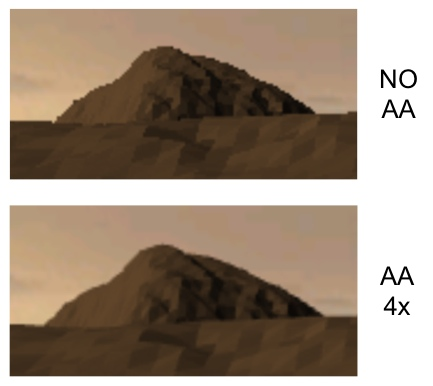

L'antialiasing è quella tecnica di rendering ampiamente diffusa nelle moderne applicazioni grafiche che consente di ridurre le seghettature nelle linee e nei contorni degli oggetti tridimensionali. È un effetto in grado di rendere estremamente più gradevole l'immagine finale ma è allo stesso tempo piuttosto pesante dal punto di vista delle performance, in particolar modo negli hardware più datati.
L'antialiasing è realizzabile con varie tecniche, le due più comuni prevedono di renderizzare un color buffer dalle dimensioni da due a sedici volte maggiore rispetto al viewport e successivamente di scalare l'immagine con un algoritmo lineare o cubico (multisampling). Una seconda tecnica prevede di “fondere” tra di loro quattro o più immagini ottenute renderizzando la scena da un punto di vista simile ma lievemente traslato da un'immagine all'altra.
Il presente elaborato si è orientato verso la prima delle due tecniche in quanto capace di restituire una superiore qualità dell'immagine. In realtà la tecnica utilizzata per realizzare l'effetto è talmente semplice e immediata da non poter essere considerata una vera e propria funzionalità propria del progetto e viene qui citata soltanto per completezza.
La resa dell'effetto di antialiasing è completamente demandata al sottosistema grafico per mezzo di due attributi SDL: SDL_GL_MULTISAMPLEBUFFERS e SDL_GL_MULTISAMPLESAMPLES. Quest'ultimo è sempre impostato a 4 per indicare che – in caso di antialiasing abilitato – intendiamo avvalerci di un multicampionamento pari a quattro volte la dimensione originale dell'immagine. Il primo attributo è un flag che abilita o disabilita questa funzionalità. È chiaro che il programmatore non deve fare alcuno sforzo per realizzare questa funzionalità e quindi tale effetto non ha alcun valore dal punto di vista didattico. Tuttavia si è preferito mantenerlo perché è in grado di migliorare sensibilmente la qualità del rendering.
NB: non sempre i driver grafici supportano correttamente questa funzionalità di antialiasing; questo avviene frequentemente in caso di hardware datato o di fascia estremamente economica. In questi casi, se si tenta di attivare questo effetto si otterrà uno schermo completamente nero e il processo rimarrà bloccato. In ogni caso, il software parte sempre con tutte le opzioni disabilitate e sarà quindi possibile farlo ripartire senza problemi.